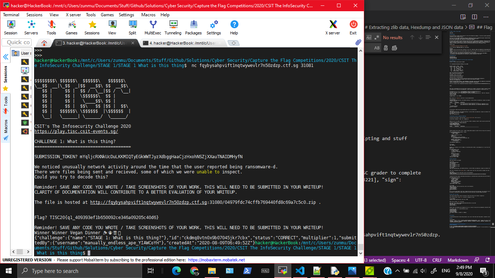

Original Github Link
STAGE 1: What is this thing?
STAGE ONE
Description
You are working as a cyber security analyst for TISC (The InfoSecurity Company). A client has recently approached us after they were struck by ransomware on their database servers!
The last script the sysadmin remembered running was something he took off a stackoverflow page: stackoverflowed.png attached below! This lead to a github page: https://github.com/divoc-91/AnorocWare-Server-Patch We also found some deleted files: Some sort of transactional diagram
We noticed unusual network activity around the time that the user reported being ransomware-d. There were files being sent and received, some of which we were unable to inspect. We suspect they are using a simple password (6 characters, hexadecimal) on the zip files as well as several layers of encoding / compression so it cannot be automatically unpacked by the company's firewall or antivirus. Think of it roughly like zipping a file many times. We need your help to write some code that will get to the bottom of this!
Connect using
nc fqybysahpvift1nqtwywevlr7n50zdzp.ctf.sg 31081
You will need your SUBMISSION_TOKEN too! (find below)
REMINDER!
- Save any code you wrote and take screenshots of your work, THESE WILL NEED TO BE SUBMITTED IN YOUR WRITEUP FOR YOUR ATTEMPT TO BE CONSIDERED VALID!
- Writeups should be sent from the email address used to sign up for TISC to tisc_contactus@csit.gov.sg within 48h after the end of your 48h session.
- Emails should have "tiscwriteup your_fullname_goes_here" as the subject.
- You should not share your writeups with anyone else or post them publicly before 08 Sept 2020 0000hrs.
- The clarity of your documentation will contribute to a better evaluation of your work.
Attached Files
planBscheme.png
stackoverflowed.png
suspectedscript.png
Solution
Use fcrackzip to bruteforce the password of the zip file and extract out temp.mess.
Make a python program that can identify if a file is gzip/xz/bzip/zlib compressed, Base64, a regular hexdump, a list of integers. Then either extract it out (for gzip/xz/bzip/zlib), convert into raw data (Base64, hexdump), or convert each integer in the list of integers to a character and write all of the characters to a raw file.
Run this program recursively on temp.mess and you will get the flag
My Thought Process
Cracking Zip
Firstly, I netcat using the given command
~$ nc fqybysahpvift1nqtwywevlr7n50zdzp.ctf.sg 31081
$$$$$$$$\ $$$$$$\ $$$$$$\ $$$$$$\
\__$$ __|\_$$ _|$$ __$$\ $$ __$$\
$$ | $$ | $$ / \__|$$ / \__|
$$ | $$ | \$$$$$$\ $$ |
$$ | $$ | \____$$\ $$ |
$$ | $$ | $$\ $$ |$$ | $$\
$$ | $$$$$$\ \$$$$$$ |\$$$$$$ |
\__| \______| \______/ \______/
CSIT's The Infosecurity Challenge 2020
https://play.tisc.csit-events.sg/
CHALLENGE 1: What is this thing?
======================================
SUBMISSION_TOKEN? PUTINYOURTOKENHERE
We noticed unusually network activity around the time that the user reported being ransomware-d.
There were files being sent and recieved, some of which we were unable to inspect.
Could you try to decode this?
Reminder! SAVE ANY CODE YOU WROTE / TAKE SCREENSHOTS OF YOUR WORK, THIS WILL NEED TO BE SUBMITTED IN YOUR WRITEUP!
CLARITY OF DOCUMENTATION WILL CONTRIBUTE TO A BETTER EVALUATION OF YOUR WRITEUP.
The file is hosted at http://fqybysahpvift1nqtwywevlr7n50zdzp.ctf.sg:31080/04979fdc74cffb769440fd8c69a7c5c0.zip .
Flag?
After that I downloaded the zip file and found a temp.mess file. However, extracting it seems to require a password. Since the challenge said the password was 6 characters and hexadecimal, I used fcrackzip to get the password. It took 20 min or so?
$ fcrackzip -b -u -v -l 6 -c ':0123456789ABCDEF' 04979fdc74cffb769440fd8c69a7c5c0.zip
found file 'temp.mess', (size cp/uc 245827/245740, flags 3, chk a499)
$ fcrackzip -b -u -v -l 6 -c ':0123456789abcdef' 04979fdc74cffb769440fd8c69a7c5c0.zip found file 'temp.mess', (size cp/uc 245827/245740, flags 3, chk a499)
checking pw 98967f
PASSWORD FOUND!!!!: pw == 9a035a
Basic analysis of temp.mess show that it is gzip compressed data
$ file temp.mess
temp.mess: gzip compressed data, last modified: Wed Aug 5 11:28:11 2020, max compression, original size modulo 2^32 245647
$ binwalk temp.mess
DECIMAL HEXADECIMAL DESCRIPTION
--------------------------------------------------------------------------------
0 0x0 gzip compressed data, maximum compression, last modified: 2020-08-05 11:28:11
15 0xF gzip compressed data, maximum compression, last modified: 2020-08-05 11:28:11
$ mv temp.mess temp.gz
$ gunzip -d temp.gz
$
On extracting it seems like you get another gzip file. So I extracted that
$ file temp
temp: gzip compressed data, last modified: Wed Aug 5 11:28:11 2020, max compression, original size modulo 2^32 245554
$ mv temp temp.gz && gunzip -d temp.gz
$ file temp
temp: zlib compressed data
Extracting zlib data
To extract the zlib data, I used zlib-flate (sudo apt install qpdf first to use it)
$ zlib-flate -uncompress < temp | cat > tempdata.txt
Extracting hexdump and list of integers (JSON Data)
Opening the text file makes it seem like base64 data. However, decoding it doesn't seem to give any useful data
$ base64 -d tempdata.txt > tempdata-b64decoded
$ file tempdata-b64decoded
tempdata-b64decoded: data
$ binwalk tempdata-b64decoded
DECIMAL HEXADECIMAL DESCRIPTION
--------------------------------------------------------------------------------
Another possible form of data is Hex. I coded a simple python program to convert the hex string into raw byte data
def reverseHexDump(filename, outFile = "temp"):
with open(filename) as f:
data = f.read()
# Read 2 characters at a time
intData = []
charAtTime = 2
for i in range(0,len(data),charAtTime):
intData.append(int( data[i:i+charAtTime] ,16))
byteData = bytes(intData)
with open(outFile,'wb') as f:
f.write(byteData)
reverseHexDump('tempdata.txt')
$ file temp
temp: JSON data
Moreover, it's actually a list of integers. On converting them to ASCII, I get garbage text, so I put this text into a new file with another python code
def readInJson(file, out):
with open(file) as f:
data = f.read()
processedData = eval(data)
strData = ""
for i in processedData:
strData += chr(i)
with open(out,'w') as f:
f.write(strData)
readInJson('temp','temp')
Extrcating xz
After that extract it out again
$ file temp
temp: XZ compressed data
$ mv temp temp.xz
$ xz -d temp.xz
$ file temp
temp: gzip compressed data, last modified: Wed Aug 5 11:28:11 2020, max compression, original size modulo 2^32 215096
After that I extracted it with gunzip and xz again to get a text file, with a bunch of integers this time
$ file temp
temp: ASCII text, with very long lines, with no line terminators
$ head -c 100 temp
3738396338346237363535303163346566303236386362623834653061656331323162383562373037373737373730626236
I guessed that these integers could mean more byte data so I converted them into byte data and wrote the bytes into raw file
def readInIntegers(file,out):
with open(file) as f:
data = f.read()
intData = int(data)
#print(intData)
byteData = bytes([intData])
with open(out,'wb') as f:
f.write(byteData)
readInIntegers('temp', 'temp1')
$ file temp1
temp1: ASCII text, with very long lines, with no line terminators
$ head -c20 temp1
[3738396338346237363
$ tail -c20 temp1
306533333239353537L]
$
Ok it's just the same number. After that I thought that this may just be hex data again, and converted it into raw byte data again (and that was JSON so I converted the strings inside and so on) After that there is way more tedious extraction.
Some other file types
After going through several times of extraction, there were some new file formats I figured out
One of them was bzip. I used dtrx to extract it (because I'm lazy)
$ file tempbzip
tempbzip: bzip2 compressed data, block size = 900k
Here's how to install dtrx by the way.
wget http://ftp.br.debian.org/debian/pool/main/d/dtrx/dtrx_7.1-2_all.deb
sudo dpkg -i dtrx_7.1-2_all.deb
sudo apt update
sudo apt install -f
Another type I was decoding (and struggling to do so) is a type of string with only alphanumeric characters.Then I realised it is Base64
$ cat temp1 | grep -o -P '.{0,3}[^0-9A-Za-z].{0,4}'
$ head -c20 temp1
UWxwb09URkJXU1pUV1V4
$ tail -c20 temp1
Ulwd29TQ1kwcklDQT0K
$ cat temp1 | base64 -d | base64 -d > tempbzip
$
Scripting
I started getting bored of doing things manually. Also I don't think thats what they wanted. I decided to start scripting the automatic extraction of files. There was probably an online extractor online that could do this for you, but I'm not very smart I wanted to challenge myself.
After that I let the program run until it crashes correctly, and I can get the flag
$ python solve.py
...
an integer is required
Traceback (most recent call last):
File "solve.py", line 135, in <module>
scriptRun('test')
File "solve.py", line 129, in scriptRun
raise Exception(str(e)+"\nCurrent counter at "+str(counter))
Exception: an integer is required
Current counter at 163
$ cat test163
{"anoroc": "v1.320", "secret": "TISC20{q1_409393ef1b650092ce346a09205c40d6}", "desc": "Submit this.secret to the TISC grader to complete challenge", "constants": [1116352408, 1899447441, 3049323471, 3921009573, 961987163, 1508970993, 2453635748, 2870763221], "sign": "boy0NNVUj2epGX0mAv5bo9nwBqqwcQ"}
Wow I took 6.5 hours.
Flag
TISC20{q1_409393ef1b650092ce346a09205c40d6}
Final Submission
$ nc fqybysahpvift1nqtwywevlr7n50zdzp.ctf.sg 31081
.
.
.
Flag? TISC20{q1_409393ef1b650092ce346a09205c40d6}
Reminder! SAVE ANY CODE YOU WROTE / TAKE SCREENSHOTS OF YOUR WORK, THIS WILL NEED TO BE SUBMITTED IN YOUR WRITEUP!
Winner Winner Vegan Dinner 🎉🎊🎁🥳
{"challenge":{"name":"STAGE 1: What is this thing?"},"id":"ckdmq8vtn0x9b07045jkr7cbx","status":"CORRECT","multiplier":1,"submittedBy":{"username":"manually_endless_ape_YIAWCoYH"},"createdAt":"2020-08-09T06:49:52Z"}

Final Python Solution
# Run in python 2
ZIP_FILE = "04979fdc74cffb769440fd8c69a7c5c0.zip"
PASSWORD = "9a035a"
import os
def route(inname,out):
if inname != out:
os.system("mv "+inname+" "+out)
def unzip(filename, out="temp.mess"):
os.system("unzip"+" -P "+PASSWORD+" "+ZIP_FILE)
route("temp.mess",out)
def unGZ(filename, out):
os.system("gunzip "+filename)
route(filename.split('.')[0],out)
def unXz(filename, out):
command = "xz -d "+filename
print('Command:' + command)
os.system(command)
route(filename.split('.')[0],out)
def unZlib(filename,out):
command = 'zlib-flate -uncompress < '+filename+' | cat > '+out
os.system(command)
def reverseHexDump(filename, outFile = "rawFile"):
with open(filename) as f:
data = f.read()
# Read 2 characters at a time
intData = []
charAtTime = 2
for i in range(0,len(data),charAtTime):
intData.append(int( data[i:i+charAtTime] ,16))
byteData = bytes(intData)
with open(outFile,'wb') as f:
f.write(byteData)
def readInJson(file, out):
with open(file) as f:
data = f.read()
processedData = eval(data)
strData = ""
for i in processedData:
strData += chr(i)
with open(out,'w') as f:
f.write(strData)
#############################################################################
def legacy():
os.system('rm temp*')
unzip(ZIP_FILE,'temp.gz')
unGZ('temp.gz','temp.gz')
unGZ('temp.gz','temp.zlib')
unZlib('temp.zlib','temp')
reverseHexDump('temp','temp.json')
readInJson('temp.json', 'temp.xz')
os.system('rm temp')
unXz('temp.xz', 'temp.gz')
unGZ('temp.gz','temp.xz')
unXz('temp.xz', 'temp')
reverseHexDump('temp','temp.json')
readInJson('temp.json', 'temp')
reverseHexDump('temp', 'temp')
readInJson('temp', 'temp.zlib')
unZlib('temp.zlib','temp.bzip')
os.system("dtrx temp.bzip && mv temp.bzip.1 temp.zlib")
unZlib('temp.zlib','temp')
reverseHexDump('temp','temp.json')
readInJson('temp.json', 'tempb64')
readInJson('temp.json', 'test')
#os.system('$ cat tempb64 | base64 -d > test')
#os.system('rm temp*')
def singleExtraction(filename, outfile):
cmd = os.popen('file '+filename).read()
cmdOut = cmd.split(':')[1]
print(cmdOut)
if 'gzip compressed data' in cmdOut:
#unGZ(filename,outfile)
os.system("dtrx "+filename+" && mv "+filename+".1 "+outfile)
elif 'XZ compressed data' in cmdOut:
os.system('mv '+filename+' '+filename+'.xz')
unXz(filename+'.xz', outfile)
elif 'zlib compressed data' in cmdOut:
unZlib(filename, outfile)
elif 'ASCII text, with very long lines' in cmdOut:
with open(filename) as f:
data = f.read()
b64Identify = False
for i in "ABCDEFGHIJKLMNOPQRSTUVWXYZ":
if i in data: b64Identify = True
if b64Identify: #base64
os.system("cat "+filename+" | base64 -d > "+outfile)
else:
reverseHexDump(filename,outfile)
elif 'JSON data' in cmdOut:
readInJson(filename, outfile)
elif 'bzip2 compressed data' in cmdOut:
os.system("dtrx "+filename+" && mv "+filename+".1 "+outfile)
else:
os.system("cp "+filename+" undoneyet")
raise Exception("Not implemented file type of "+cmdOut)
def scriptRun(ogFile):
os.system("cp "+ogFile+" "+ogFile+str(0))
counter = 0
while True:
inf , outf = ogFile+str(counter), ogFile+str(counter+1)
try:
singleExtraction(inf, outf)
except Exception as e:
print(str(e))
raise Exception(str(e)+"\nCurrent counter at "+str(counter))
counter += 1
if True:
legacy()
#singleExtraction('tempb64', 'temp8')
scriptRun('test')
#reverseHexDump('temp1','temp.json')